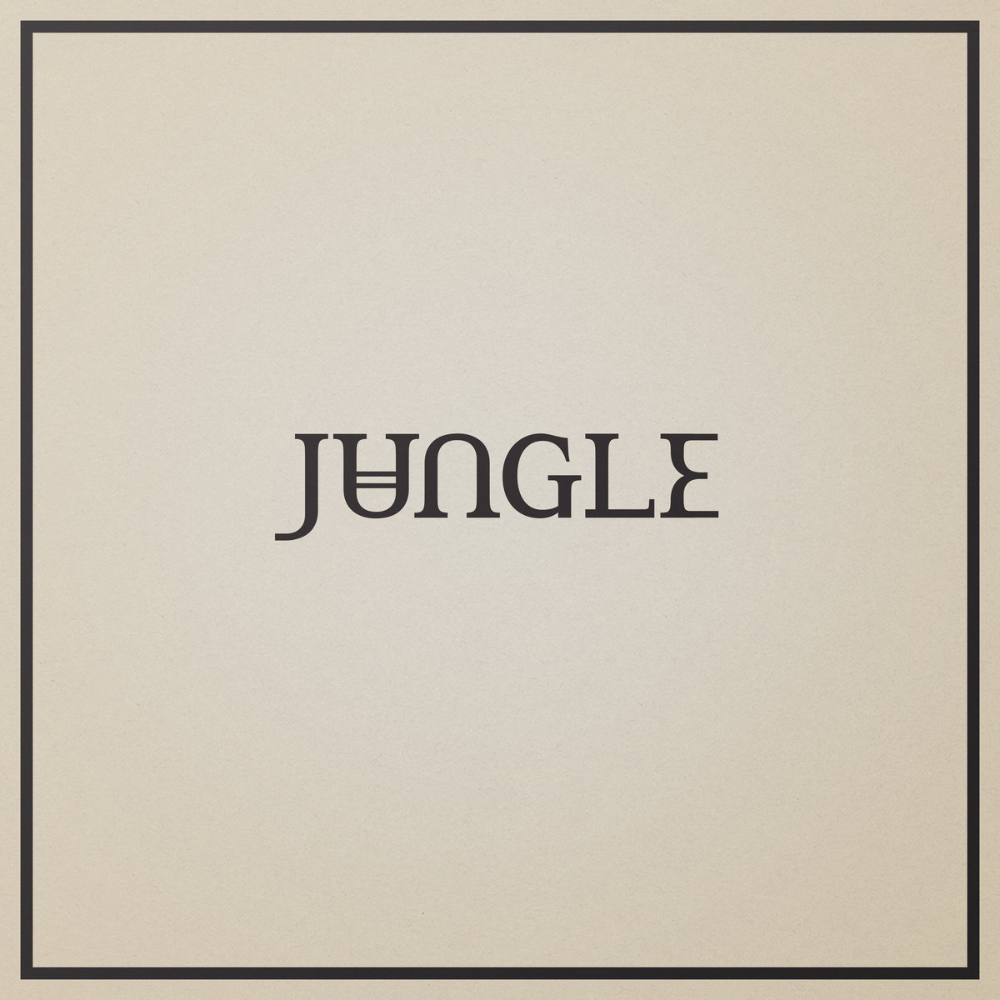
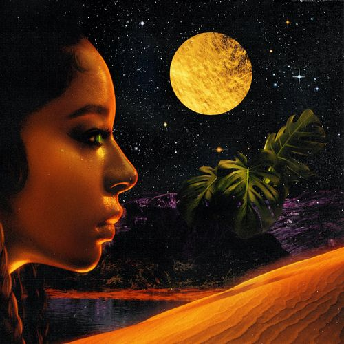
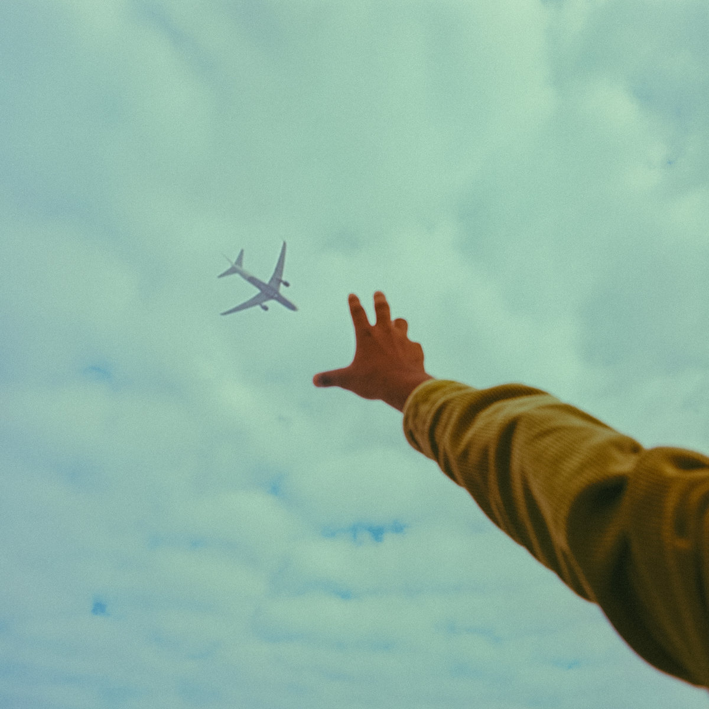
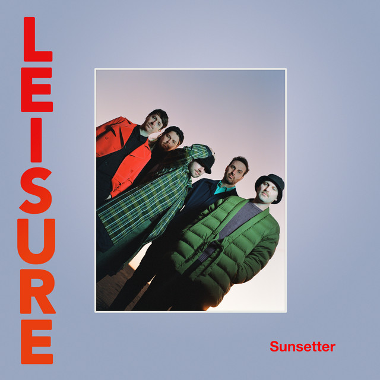
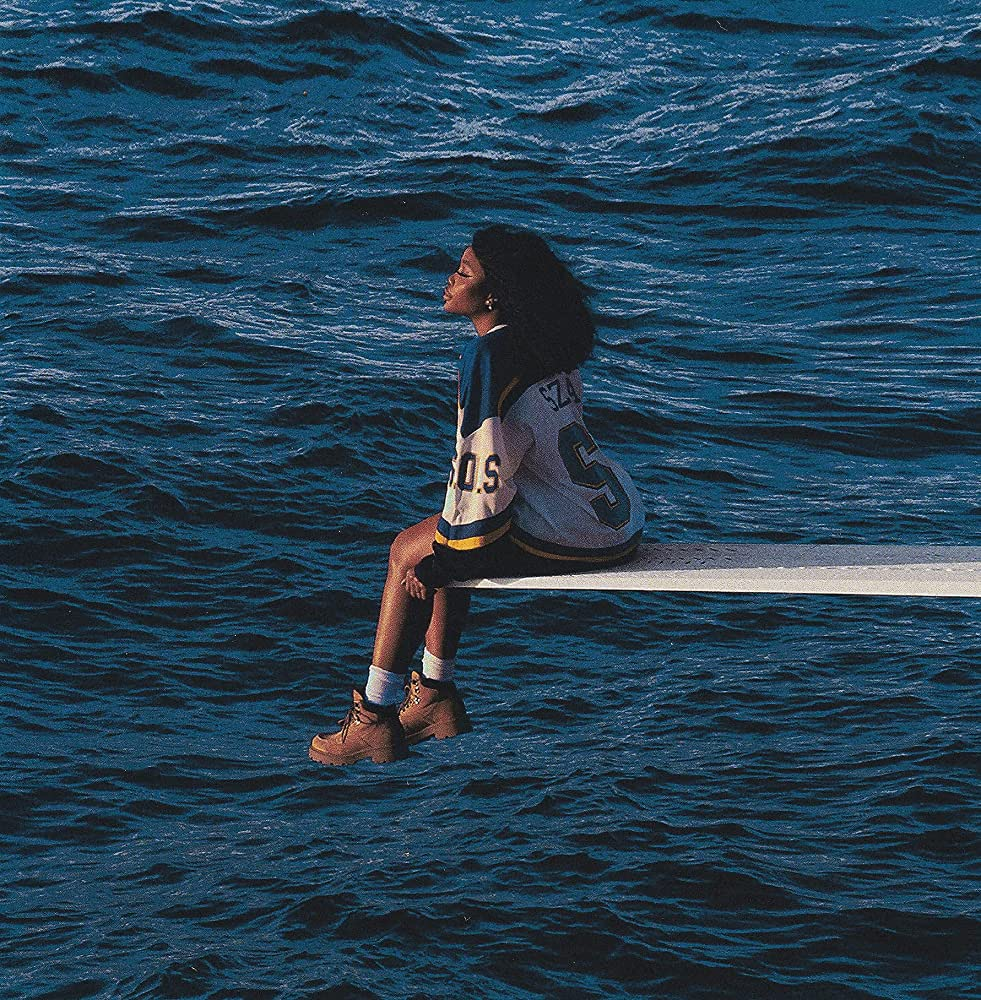

Haz click sobre la imagen para entrar al álbum en Spotify.

Álbum: Loving in Stereo
Artista: Jungle
"Loving In Stereo" es el vibrante segundo álbum de Jungle. Fusiona funk, soul y electrónica en canciones contagiosas y optimistas, destacando su evolución musical y su energía festiva.

Álbum: JAGUAR
Artista: Victoria Monet
"Jaguar" es el debut EP de Victoria Monet. Con su voz seductora y letras empoderadoras, ofrece un sonido R&B moderno y lento que cautiva desde la primera vez que se escucha.

Álbum: Drive 2
Artista: Kevin Ross
"Drive 2" es el segundo álbum de Kevin Ross. Con su mezcla de R&B contemporáneo y letras emotivas, captura la esencia de la vida y el amor mientras viajas por el camino de la vida.

Álbum: Love Me Like
Artista: Rayana Ray
"Love Me Like" es el álbum debut de Rayana Jay. Con su mezcla de R&B y soul, ofrece letras introspectivas y melodías seductoras que exploran el amor y el crecimiento personal.

Álbum: Bicoastal
Artista: Bathe
"Bicoastal" es el álbum de debut de Bathe. Con su fusión de dream pop y R&B, ofrece paisajes sonoros atmosféricos y letras melancólicas que exploran la dualidad y la búsqueda de identidad.

Álbum: Same As It Ever Was
Artista: Daste
"Same As It Ever Was" es el álbum debut de Daste. Con su estilo indie pop y electrónico, ofrece canciones pegadizas y letras introspectivas que exploran el paso del tiempo y las experiencias personales.

Álbum: Sunsetter
Artista: Leisure
"Sunsetter" es el segundo álbum de Leisure. Con su mezcla de funk, pop y música electrónica, ofrece melodías soleadas y relajantes que invitan a disfrutar del atardecer con estilo.

Álbum: Public Access Radio
Artista: Sweeps
"Public Access Radio" es el álbum debut de Sweeps. Con su sonido indie pop y letras evocadoras, captura la esencia de la nostalgia y la exploración emocional en una atmósfera introspectiva.

Álbum: SOS
Artista: SZA
"SOS" es el segundo álbum de estudio de SZA. Con su mezcla de R&B y neo-soul, ofrece letras íntimas y voces cautivadoras que exploran el amor, la pérdida y la autorreflexión.